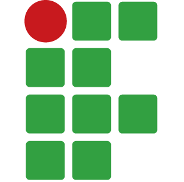

Este projeto foi desenvolvido com foco em compreender conceitos relacionados ao controle financeiro e à administração consciente do dinheiro.
A atividade integrou conhecimentos de diferentes áreas para aplicar teoria e prática em um único trabalho.
Assista ao material para conhecer exemplos de planejamento financeiro, economia pessoal e formas de controlar despesas.